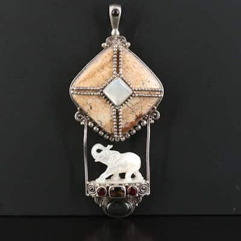

PASSSajen Sterling Jasper, Garnet & Carved Mother-of-Pearl Elephant Pendant
Sajen sterling silver pendant with carved mother-of-pearl elephant, brecciated jasper pane
11h left
Current bid$30 · 9 bids
Est. value$45
Your max bid$0
Margin at bid−$25
Details & price history →